<nav class="bg-dark nav-bar">
    <div class="logo cursor-pointer">
        
        <div>
            <h4 class="text-light font-heading logo__name">{{ 'The cubicle of' | capitalize }}</h4>
            <h4 class="text-light font-heading logo__name">{{ 'Aiden Phan' | capitalize }}</h4>
        </div>
    </div>

    <div id="side-menu-opener" class="cursor-pointer text-light toggle-container" (click)="this.onOpenSideMenu()">
        <svg xmlns="http://www.w3.org/2000/svg" width="30" height="30" fill="currentColor" class="bi bi-arrow-bar-left" viewBox="0 0 16 16">
            <path fill-rule="evenodd" d="M12.5 15a.5.5 0 0 1-.5-.5v-13a.5.5 0 0 1 1 0v13a.5.5 0 0 1-.5.5ZM10 8a.5.5 0 0 1-.5.5H3.707l2.147 2.146a.5.5 0 0 1-.708.708l-3-3a.5.5 0 0 1 0-.708l3-3a.5.5 0 1 1 .708.708L3.707 7.5H9.5a.5.5 0 0 1 .5.5Z"/>
        </svg>
        <div class="menu-word-container">
            <p class="font-heading">{{ 'MENU' | capitalize }}</p>
        </div>
        <div id="toggle" class="toggle bg-light"></div>
    </div>
</nav>